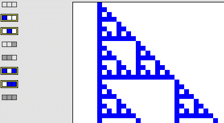

| Finally, the rules generating Pascal's triangle may remind you of some cellular automata. |
| For example, with the standard Pascal's triangle to get an odd number in the generation
n box in location i, exactly one of the generation n-1 boxes in locations i and
i-1 must be odd. |
| Thinking of even numbers corresponding to dead cells and odd numbers
corresponding to live cells, this means the generation n cell at position i is alive
if exactly one of the generation n-1 cells at positions i and i-1
is alive. |
| In terms of the an N=3 binary CA, regardless of the state of the right neighbor,
the (left, center) configurations (live, dead) and
(dead, live) give a live cell in the next generation. |
| That is, a live cell is produced by any of these configurations: |
| (live, dead, dead), (live, dead, live), (dead, live, dead) and (dead, live, live) |
|  |
| Can you find cellular automata that generate some of these other Pascal triangle
patterns? |